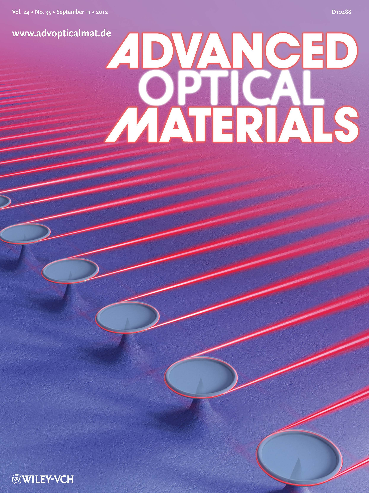

| Featured Publications |
|
Xiao-Chong Yu, Bei-Bei Li (co-first author) et al., Advanced Materials 26(44), 7462-7467 (2014). Front cover paper, highlighted in Materials Views, AZO nano
 Optical fiber sensors have been extensively employed in high-sensitivity biosensing, due to their advantages of simple configuration, low cost, label-free property, and remote sensing capability. Over the past few years, it has been demonstrated that when the diameter of fiber is reduced to the scale of optical wavelength, there exists pronounced evanescent field outside the nanofiber, which is very sensitive to the refractive index change of the surrounding medium. In this work, we fabricated a pair of nanofibers with uniform diameter, and placed them into a microfluidic channel. When single nanoparticles in the microfluidic channel are bound to the surface of the nanofibers, the transmitted power shows a significant decrease due to the scattering and absorption of the nanoparticles in the evanescent field. By monitoring the step changes in the transmission of the nanofiber, detection and sizing of nanoparticles with single uniform radius (~ 100 nm) and of mixed nanoparticles with two different radii (100 nm and 170 nm) are both realized. Moreover, by employing plasmonic enhancement, detection of single gold nanorods with much smaller sizes (diameter ~ 16 nm, length ~ 40 nm), is also demonstrated. This nanofiber pair can be further extended to an array containing more nanofibers, thus to dramatically increase the sensing speed, which promises a bright future of the nanofiber sensors. Optical fiber sensors have been extensively employed in high-sensitivity biosensing, due to their advantages of simple configuration, low cost, label-free property, and remote sensing capability. Over the past few years, it has been demonstrated that when the diameter of fiber is reduced to the scale of optical wavelength, there exists pronounced evanescent field outside the nanofiber, which is very sensitive to the refractive index change of the surrounding medium. In this work, we fabricated a pair of nanofibers with uniform diameter, and placed them into a microfluidic channel. When single nanoparticles in the microfluidic channel are bound to the surface of the nanofibers, the transmitted power shows a significant decrease due to the scattering and absorption of the nanoparticles in the evanescent field. By monitoring the step changes in the transmission of the nanofiber, detection and sizing of nanoparticles with single uniform radius (~ 100 nm) and of mixed nanoparticles with two different radii (100 nm and 170 nm) are both realized. Moreover, by employing plasmonic enhancement, detection of single gold nanorods with much smaller sizes (diameter ~ 16 nm, length ~ 40 nm), is also demonstrated. This nanofiber pair can be further extended to an array containing more nanofibers, thus to dramatically increase the sensing speed, which promises a bright future of the nanofiber sensors.
|
|
Bei-Bei Li et al., PNAS 111(41), 14657-14662 (2014). Highlighted in Phys. org, Asian Scientist, and AZO nano
 Ultrasensitive nanoparticle detection holds great potential for early-stage diagnosis of human diseases and for environmental monitoring. In this work, we report for the first time, to our knowledge, single nanoparticle detection by monitoring the beat frequency of split-mode Raman lasers in high-Q optical microcavities. We first demonstrate this method by controllably transferring single 50-nm¨Cradius nanoparticles to and from the cavity surface using a fiber taper. We then realize real-time detection of single
nanoparticles in an aqueous environment, with a record low detection limit of 20 nmin radius, without using additional techniques for laser noise suppression. Because Raman scattering occurs in most materials under practically any pump wavelength, this Raman laser-based sensing method not only removes the need for doping the microcavity with a gain medium but also loosens the requirement of specific wavelength bands for the pump lasers, thus representing a significant step toward practical microlaser sensors. Ultrasensitive nanoparticle detection holds great potential for early-stage diagnosis of human diseases and for environmental monitoring. In this work, we report for the first time, to our knowledge, single nanoparticle detection by monitoring the beat frequency of split-mode Raman lasers in high-Q optical microcavities. We first demonstrate this method by controllably transferring single 50-nm¨Cradius nanoparticles to and from the cavity surface using a fiber taper. We then realize real-time detection of single
nanoparticles in an aqueous environment, with a record low detection limit of 20 nmin radius, without using additional techniques for laser noise suppression. Because Raman scattering occurs in most materials under practically any pump wavelength, this Raman laser-based sensing method not only removes the need for doping the microcavity with a gain medium but also loosens the requirement of specific wavelength bands for the pump lasers, thus representing a significant step toward practical microlaser sensors.
|
|
Yong-Chun Liu et al., Phys. Rev. Lett. 112(21), 213602 (2014). Highlighted in Phys. org, Photonics Online
 The coherent light-matter interaction at the single-photon and electronic qubit level promises to be a remarkable potential for nonclassical information processing. Besides the efforts of improving the figure of merit of the cavities, here we demonstrate strong anharmonicity in the polariton dressed states via dark state resonances in a highly dissipative cavity. It is shown that the vacuum Rabi oscillation occurs for a single quantum emitter inside a cavity even with the bosonic decay-to-interaction rate ratio exceeding 10^2, when the photon field is coupled to an auxiliary high-Q cavity. This study provides a promising platform for overcoming decoherence and advancing the coherent manipulation of polariton qubits. The coherent light-matter interaction at the single-photon and electronic qubit level promises to be a remarkable potential for nonclassical information processing. Besides the efforts of improving the figure of merit of the cavities, here we demonstrate strong anharmonicity in the polariton dressed states via dark state resonances in a highly dissipative cavity. It is shown that the vacuum Rabi oscillation occurs for a single quantum emitter inside a cavity even with the bosonic decay-to-interaction rate ratio exceeding 10^2, when the photon field is coupled to an auxiliary high-Q cavity. This study provides a promising platform for overcoming decoherence and advancing the coherent manipulation of polariton qubits.
|
|
Linbo Shao, Xue-Feng Jiang (co-first author) et al., Advanced Materials 25(39), 5616-5620 (2013). Frontispiece paper, Highlighted in materialsviews.com, materialsviewschina.com
 A new label-free sensing mechanism is demonstrated experimentally by monitoring the whispering-gallery mode broadening in microcavities. It is immune to both noise from the probe laser and environmental disturbances, and is able to remove the strict requirement for ultra-high-Q mode cavities for sensitive nanoparticle detection. This ability to sense nanoscale objects and biological analytes is particularly crucial for wide applications. A new label-free sensing mechanism is demonstrated experimentally by monitoring the whispering-gallery mode broadening in microcavities. It is immune to both noise from the probe laser and environmental disturbances, and is able to remove the strict requirement for ultra-high-Q mode cavities for sensitive nanoparticle detection. This ability to sense nanoscale objects and biological analytes is particularly crucial for wide applications.
|
|
Yong-Chun Liu et al., Phys. Rev. Lett. 111(8), 083601 (2013).
 We demonstrate that the nonlinear optomechanical interaction leads to parametric down-conversion, capable of generating polariton pairs formed by photons and phonons. The nonlinearity is resonantly enhanced through frequency matching, and such parametric down-conversion does not require the stringent condition that the single-photon optomechanical coupling strength g be on the order of the mechanical resonance frequency ωm. We provide analytical results for the frequency matching condition and derive the nonlinear coefficient. Numerical simulations on polariton pair generation are presented, showing that photon like polaritons, phononlike polaritons, and mixed photon-phonon polaritons can be selectively generated. Such nonlinear interaction offers a promising way for harnessing the optomechanical nonlinearity to manipulate photons and phonons. We demonstrate that the nonlinear optomechanical interaction leads to parametric down-conversion, capable of generating polariton pairs formed by photons and phonons. The nonlinearity is resonantly enhanced through frequency matching, and such parametric down-conversion does not require the stringent condition that the single-photon optomechanical coupling strength g be on the order of the mechanical resonance frequency ωm. We provide analytical results for the frequency matching condition and derive the nonlinear coefficient. Numerical simulations on polariton pair generation are presented, showing that photon like polaritons, phononlike polaritons, and mixed photon-phonon polaritons can be selectively generated. Such nonlinear interaction offers a promising way for harnessing the optomechanical nonlinearity to manipulate photons and phonons.
|
|
Yun-Feng Xiao*et al., Laser & Photonics Reviews 7(5), L51-L54 (2013). Back inside cover paper, Highlighted in materialsviews.com
 A new form of induced transparency enabled by dynamical tunneling coupling of continuous chaos and discrete regular modes in a slightly deformed optical microcavity is demonstrated experimentally. An optical beam is focused on the cavity boundary and tuned on resonance with a high-Q mode, which leads to destructive interference for the excitation of chaotic field and induces a transparency in the transmission. The experimental results are in excellent agreement with a model based on quantum scattering theory. This tunneling-induced transparency is accompanied by extremely steep normal dispersion, and holds great potential in slow light and enhanced nonlinear interactions. A new form of induced transparency enabled by dynamical tunneling coupling of continuous chaos and discrete regular modes in a slightly deformed optical microcavity is demonstrated experimentally. An optical beam is focused on the cavity boundary and tuned on resonance with a high-Q mode, which leads to destructive interference for the excitation of chaotic field and induces a transparency in the transmission. The experimental results are in excellent agreement with a model based on quantum scattering theory. This tunneling-induced transparency is accompanied by extremely steep normal dispersion, and holds great potential in slow light and enhanced nonlinear interactions.
|
|
Yong-Chun Liu et al., Phys. Rev. Lett. 110(15), 153606 (2013).
 Cooling of mesoscopic mechanical resonators represents a primary concern in cavity optomechanics. In this Letter, in the strong optomechanical coupling regime, we propose to dynamically control the cavity dissipation, which is able to significantly accelerate the cooling process while strongly suppressing the heating noise. Furthermore, the dynamic control is capable of overcoming quantum backaction and reducing the cooling limit by several orders of magnitude. The dynamic dissipation control provides new insights for tailoring the optomechanical interaction and offers the prospect of exploring mesoscopic quantum physics. Cooling of mesoscopic mechanical resonators represents a primary concern in cavity optomechanics. In this Letter, in the strong optomechanical coupling regime, we propose to dynamically control the cavity dissipation, which is able to significantly accelerate the cooling process while strongly suppressing the heating noise. Furthermore, the dynamic control is capable of overcoming quantum backaction and reducing the cooling limit by several orders of magnitude. The dynamic dissipation control provides new insights for tailoring the optomechanical interaction and offers the prospect of exploring mesoscopic quantum physics.
|
|
Xue-Feng Jiang et al., Advanced Materials, 24(35), OP260 (2012). Highlighted in materialsviews.com, Optik & Photonik, and Optics and Photonics News
Ultrahigh-Q optical whispering gallery microcavities are promising platforms for fundamental studies and applied photonics. A new type of on-chip microcavity is experimentally realized, which supports both highly unidirectional emission and ultra-high-Q factors exceeding 100 million in near infrared. By doping erbium, the unidirectional-emission lasing is observed in 1550 nm band with the threshold as low as 2 μW.
|
|
Yun-Feng Xiao* et al., Phys. Rev. A 85(3), 031805(R) (2012). "Rapid Communications". One figure from this work was selected by journal web site of Physical Review A as part of ¡°Kaleidoscope¡±
We propose a hybrid photonic-plasmonic resonant structure which consists of a metal nanoparticle (MNP) and a whispering-gallery-mode (WGM) microcavity. It is found that the hybrid mode enables a strong interaction between the light and matter, and the single-atom cooperativity is enhanced by more than two orders of magnitude compared to that in a bare WGM microcavity. This improvement originates from two aspects: the MNP offers a highly enhanced local field in the vicinity of an emitter, and, interestingly, the high-Q property of WGMs can be maintained in the presence of the MNP. Thus the present system has advantages over a single microcavity or a single MNP, and holds potential in quantum optics, nonlinear optics, and highly sensitive biosensing.
|
|
Yun-Feng Xiao* et al., Phys. Rev. Lett. 105(15), 153902 (2010). Highlighted in Optics and Photonics News
We propose a kind of plasmonic whispering-gallery mode highly localized on the exterior surface of a metal-coated microresonator. This exterior (EX) surface mode possesses high quality factors at room temperature, and can be efficiently excited by a tapered fiber. The EX mode can couple to an interior (IN) mode and this coupling produces a strong anticrossing behavior, which not only allows conversion of IN to EX modes, but also forms a long-lived antisymmetric mode. As a potential application, the EX mode could be used for a biosensor with a sensitivity high of up to 500 nm per refraction index unit, a large figure of merit, and a wide detection range.
|